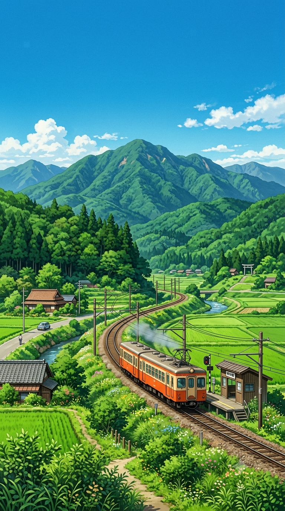

祝・活動2周年
走りはじめて、2年。感謝を乗せて、次のステージへ。
💡 ページ上のどこかでキーボードの【 2 】を押すか、ロゴを長押し（5回タップ）すると…？
お知らせ / Train-News
2周年祭の開催情報や、GitHub Pages完全移設に向けた最新情報をお届けします。
手作り広告
これまで制作してきた手作り広告の総集編です。
2年のあゆみ
2024年6月公式X（旧Twitter）アカウントを開設し、情報発信を開始。
2024年10月13日旧公式サイトをオープン。
2025年7月20日新公式サイト（Google Sites）を開設。
2025年8月フォロワー数1,250人達成。各SNS・ラボ開設。
2026年1月1日GitHub Pagesへのサイト移設を開始。
2026年6月おかげさまで活動2周年！
乗車印帳
これまでの乗車印のデザイン一覧や、記念デジタルスタンプを公開。
出発進行！ジャストストップゲーム
緑色のターゲットゾーンを狙って、タイミングよくブレーキハンドル（ボタン）を引こう！
【待機中】ボタンを押して出発！
活動理念
私たちが大切にしている想いと、3年目への決意表明。
2周年記念 配布企画
【壁紙デザイン見本】

2周年記念限定スマホ壁紙
感謝を乗せて、次のステージへ。どなたでもご自由にお持ち帰りください！